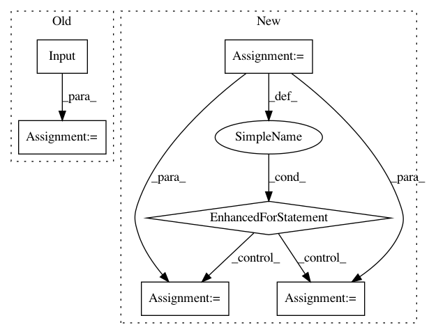

4b83c1070cebd0d996ba2cc69779dcb66d5d0032,autokeras/generator.py,DefaultClassifierGenerator,generate,#DefaultClassifierGenerator#Any#Any#,51
Before Change
ave = get_ave_layer_func(len(self._get_shape(3)))
pooling_len = int(model_len / 4)
output_tensor = input_tensor = Input(shape=self.input_shape)
for i in range(model_len):
output_tensor = BatchNormalization()(output_tensor)
output_tensor = Activation("relu")(output_tensor)
output_tensor = conv(model_width, kernel_size=self._get_shape(3), padding="same")(output_tensor)
After Change
model.layers.append(StubGlobalPooling(ave))
model.layers.append(StubDense(self.n_classes, activation="softmax"))
model.outputs = [len(model.layers)]
for index, layer in enumerate(model.layers):
layer.input = index
layer.output = index + 1
return Graph(model, False)
class RandomConvClassifierGenerator(ClassifierGenerator):
In pattern: SUPERPATTERN
Frequency: 3
Non-data size: 6
Instances
Project Name: keras-team/autokeras
Commit Name: 4b83c1070cebd0d996ba2cc69779dcb66d5d0032
Time: 2018-05-29
Author: jhfjhfj1@gmail.com
File Name: autokeras/generator.py
Class Name: DefaultClassifierGenerator
Method Name: generate
Project Name: keras-team/autokeras
Commit Name: 16474aee0c575e615c78d32f2a170c3d7f8f0082
Time: 2017-12-30
Author: jhfjhfj1@gmail.com
File Name: autokeras/graph.py
Class Name: Graph
Method Name: produce_model
Project Name: keras-team/autokeras
Commit Name: 7f30b2403fadc4eaad48ceaf6154a626f477f8c8
Time: 2018-05-26
Author: jin@tamu.edu
File Name: autokeras/generator.py
Class Name: DefaultClassifierGenerator
Method Name: generate